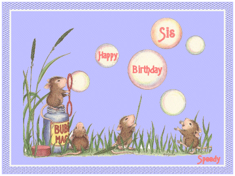
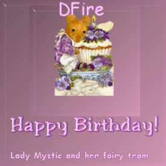
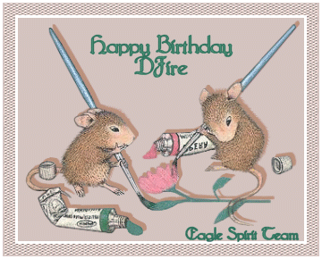
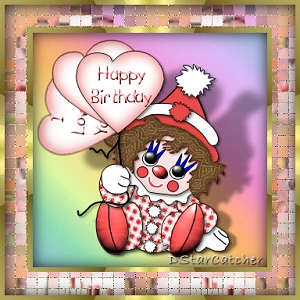
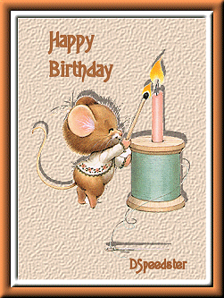
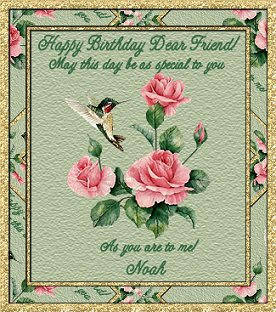
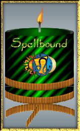

Gift time:)







From Cha:)
My Dear DFire,
You have been there for me so many times over the past year and
Im so thankful for that!
Always only an inbox away, and always with a smile and a hug:)
You do a brilliant job running DNest and I just know that DPLez
is so proud of you :)
Like we all are.. as much as we miss her,
we are glad you are here with us,
because your so special too!!
*Squishy Huggles*
Have the most wonderful birthday like you deserve..
*mwah*
Love Butterfly
Click below, more gifts to go:)

|
|